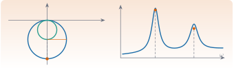
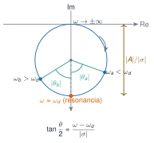

Identificación de sistemas dinámicos
M7 · Sesión S7

Objetivos y prerrequisitos
Objetivos. Esta unidad, de la que por ahora solo se desarrolla el arranque (M7.1 a M7.3), prepara el terreno de la identificación modal. Al terminar esta parte sabrás:
- situar el análisis modal experimental frente al teórico y describir sus tres modelos (espacial, modal y de respuesta);
- enunciar y comprobar las hipótesis de las que depende la teoría modal: linealidad, invariancia temporal, observabilidad y reciprocidad;
- leer en una FRF los polos (frecuencia y amortiguamiento) y los residuos (amplitud) y explicar por qué cerca de una resonancia aislada la FRF dibuja un círculo;
- relacionar los residuos de la matriz de FRF con las formas modales y recuperar una forma modal a partir de una fila o columna de residuos.
Prerrequisitos. J3.3 · Álgebra lineal numérica, J3.7 · Optimización, y la teoría de M5 y M6 (definiciones, convención \(e^{+i\omega t}\) y notación, que aquí no se repiten).
Temas de la unidad
- M7.1 Análisis modal experimental (EMA) frente a operacional (OMA)
- M7.2 Métodos de 1 GDL en frecuencia: peak-picking, circle-fit y FRF inversa
- M7.3 Ajuste de FRF por mínimos cuadrados en sistemas de varios GDL
- M7.4 Decremento aleatorio
- M7.5 Métodos en el dominio del tiempo: Ibrahim (ITD) y ERA
- M7.6 Modelos ARMA
- M7.7 Descomposición en el dominio de la frecuencia: FDD y EFDD
- M7.8 Identificación estocástica por subespacios: SSI-Cov y SSI-Data
- M7.9 Diagramas de estabilización y validación: MAC, MPC y amortiguamiento
AdvertenciaAlcance de esta versión
Los apuntes de partida (ocho PDF de teoría de vibraciones) no son una explicación de los algoritmos de identificación. Aquí solo se desarrollan los fundamentos que sí aparecen en ellos: las hipótesis (M7.1), la relación entre FRF, polos, residuos y parámetros modales y la geometría que motiva el ajuste circular (M7.2) y la expansión modal de la matriz de FRF (M7.3). Los algoritmos (peak-picking, circle-fit, FRF inversa, mínimos cuadrados, decremento aleatorio, ITD, ERA, ARMA, FDD/EFDD, SSI, diagramas de estabilización) y la comparación EMA–OMA quedan pendientes de fuentes primarias verificables.
NotaFuentes, correcciones y qué queda pendiente
Fuentes. Apuntes manuscritos del Máster Agrela, curso 2024-2025 (carpeta Teoría de vibraciones); PDF, p. n = página del PDF.
| Contenido | Origen |
|---|---|
| M7.1 enfoques teórico y experimental; GDL medibles | Intro, p. 1–2 |
| M7.1 hipótesis (linealidad, invariancia, observabilidad, reciprocidad) | Intro, p. 1 y 3 |
| M7.1 modelos espacial, modal y de respuesta | MDOF, p. 1 y 9 |
| M7.2 polos, residuos, modelos polinómico y de fracciones simples | FRF, p. 3–5; SDOF sin amortiguamiento, p. 5–6 |
| M7.2 círculo (receptancia histerética) | Diagrama de Nyquist, p. 1 |
| M7.3 expansión modal, constantes modales, reciprocidad | MDOF, p. 10–13 |
| M7.3 ejemplo (residuos y escalado de formas) | MDOF Ejemplo, p. 4–9 |
Correcciones y precisiones a los apuntes.
- Intro, p. 1: «\(N_i\) ⇒ number of responses (inputs)» debe ser número de entradas (fuerzas); \(N_o\) son las salidas (respuestas). La relación escrita entre \(N_o\), \(N_i\) y \(N\) (algo del tipo «\(\gtrsim N\)») no es legible con seguridad en el manuscrito y no se reconstruye aquí.
- Intro, p. 3: «Maxwell’s reciprocity ⇒ symmetric mass, stiffness, damping and FRF matrices» presenta la reciprocidad como hipótesis y la simetría como consecuencia; en realidad la simetría de las matrices es lo que implica la simetría de la FRF (M6.3). La igualdad \(H_{pq}=H_{qp}\) exige además comparar la misma clase de magnitud (p. ej., fuerza → desplazamiento) en los mismos grados de libertad y direcciones.
- FRF, p. 4: «muchos sistemas de 1 GDL se representan como \(H(\omega)\simeq A_1/(i\omega-\lambda_1)\)» es una aproximación local, válida cerca del polo, para modos bien separados y poco amortiguados (§ M7.2 cuantifica el error).
- FRF, p. 4: en la expresión \(H(\omega_1)=-A_1/\sigma_1+\dots\) se usa \(\sigma_1<0\) como parte real del polo; en la § M7.2 se escribe con \(|\sigma|\) para evitar el cambio de signo.
- MDOF Ejemplo, p. 9: véanse las correcciones de signo de la unidad M6 (polo del caso proporcional y \(c_r=-2\sigma_rm_r\)).
Ampliaciones externas a los apuntes (derivaciones propias, comprobadas numéricamente en Julia): el círculo exacto del término de un solo polo y su diámetro \(|A|/|\sigma|\); la propiedad del semiángulo \(\tan(\theta/2)=(\omega-\omega_d)/|\sigma|\) y la estimación de \(|\sigma|\) con dos puntos; el error relativo de la aproximación de un polo en función de \(\zeta\); la recuperación de formas a partir de una columna de residuos. Lectura para ampliar: (Ewins 2000; Silva y Maia 1999; Avitabile 2018).
Pendiente. EMA frente a OMA (los apuntes no tratan OMA); peak-picking; algoritmo de circle-fit; FRF inversa; ajuste por mínimos cuadrados; M7.4 a M7.9.
Avitabile, Peter. 2018. Modal Testing: A Practitioner’s Guide. Wiley.
Teoría breve
M7.1 Análisis modal experimental (EMA) frente a operacional (OMA)
El análisis modal busca tres cosas de una estructura: sus frecuencias naturales, sus razones de amortiguamiento y sus formas modales. Se puede abordar por dos caminos que se alimentan entre sí:
- Teórico (analítico). Parte de la geometría, las condiciones de contorno y las propiedades del material (masa, rigidez, amortiguamiento) y construye un modelo (típicamente, de elementos finitos, M6).
- Experimental. Parte de medidas de las fuerzas de entrada y de las respuestas de salida, y sigue cuatro pasos: montaje (set-up), adquisición de datos, identificación del sistema y validación. El análisis teórico aporta el background: sirve para planificar el ensayo y para interpretar los resultados.
Tres modelos de un mismo sistema. Un sistema lineal puede describirse de tres formas equivalentes (M6):
| Modelo | Contiene | Se obtiene de forma natural… |
|---|---|---|
| Espacial | \(\mathbf{M}\), \(\mathbf{C}\), \(\mathbf{K}\) | …del análisis teórico (geometría, material) |
| Modal | \(\omega_r\), \(\zeta_r\), \(\boldsymbol{\phi}_r\) | …del problema de autovalores del modelo espacial, o de la identificación |
| De respuesta | \(\boldsymbol{\alpha}(\omega)\) (FRF) | …de las medidas y también de los otros dos modelos |
flowchart LR
E["Modelo espacial<br/>M, C, K"] -- "autovalores" --> Mo["Modelo modal<br/>ωr, ζr, φr"]
Mo -- "superposición modal" --> R["Modelo de respuesta<br/>FRF α(ω)"]
R -. "identificación" .-> Mo
Mo -. "reconstrucción (si se desea)" .-> E
Med["Medidas<br/>fuerzas y respuestas"] --> R
La identificación es el paso experimental de la respuesta (medida) al modelo modal: es lo que desarrollan las unidades M7.2 y siguientes.
Grados de libertad medibles. Un sistema continuo tiene infinitos GDL, pero un ensayo solo mide un número finito \(N\) (los apuntes citan del orden de 1 a 50), limitado por: el rango de frecuencias de interés, las limitaciones de amplitud y que hay pocos transductores de giro (las rotaciones son difíciles de medir). Si se mide con \(N_o\) salidas y \(N_i\) entradas, esos números condicionan cuántos modos se pueden definir (la relación exacta escrita en los apuntes no se lee con certeza; véase la tabla de correcciones).
Las hipótesis básicas. La teoría modal usa de forma implícita cuatro hipótesis. Conviene saber qué dice cada una y cómo se vulnera:
| Hipótesis | Qué afirma | Cómo suele fallar |
|---|---|---|
| Linealidad | El sistema se rige por ecuaciones lineales, \(\mathbf{M}\ddot{\mathbf{x}}+\mathbf{C}\dot{\mathbf{x}}+\mathbf{K}\mathbf{x}=\mathbf{f}\): la respuesta a una combinación de entradas es la misma combinación de las respuestas. | Rigidez o amortiguamiento que dependen de la amplitud (holguras, rozamiento, grietas que se abren y cierran). |
| Invariancia temporal | Las propiedades dinámicas no cambian en el tiempo (\(\mathbf{M}\), \(\mathbf{C}\), \(\mathbf{K}\) constantes). | Cambios de temperatura, de masa añadida (tráfico, personas), de condiciones de apoyo durante la medida. |
| Observabilidad | Se pueden medir todos los datos necesarios para determinar las características dinámicas de interés. | Sensores insuficientes o mal ubicados (p. ej., en un nodo de un modo, que quedaría invisible). |
| Reciprocidad (de Maxwell) | La respuesta en \(p\) por una fuerza en \(q\) iguala la respuesta en \(q\) por la misma fuerza en \(p\): \(H_{pq}=H_{qp}\). | Sistemas con efectos no recíprocos (p. ej., giroscópicos) o comparar magnitudes de distinta clase o dirección. |
La reciprocidad es la «hipótesis» que más se confunde con una propiedad automática: es una consecuencia de que \(\mathbf{M}\), \(\mathbf{C}\) y \(\mathbf{K}\) sean simétricas (M6.3). En un ensayo, permite medir con el martillo en un punto y el acelerómetro en otro, o al revés, y obtener la misma FRF; el esquema de los apuntes (martillo en el punto 3 y sensor en el 1, frente a martillo en 1 y sensor en 3) ilustra justo eso.
TipCómo comprobar las hipótesis en un ensayo (ampliación externa a los apuntes)
Linealidad: repite el ensayo con dos niveles de excitación y compara las FRF; si cambian, hay no linealidad. Invariancia: repite el ensayo en momentos distintos y compara. Reciprocidad: mide \(H_{pq}\) y \(H_{qp}\) y comprueba que coinciden. Observabilidad: comprueba que los puntos de medida no coinciden con nodos de los modos de interés (con un modelo previo, M6).
ImportantePendiente en esta sección
Los apuntes no tratan el análisis modal operacional (OMA: identificación con excitación desconocida, no medida). Por eso la comparación EMA–OMA del título del tema queda pendiente; se desarrollará con fuentes primarias (p. ej., (Silva y Maia 1999; Ewins 2000) para EMA y una referencia de OMA).
Ewins, David J. 2000. Modal Testing: Theory, Practice and Application. 2.ª ed. Research Studies Press.
Silva, José M. M., y Nuno M. M. Maia, eds. 1999. Modal Analysis and Testing. Springer. https://doi.org/10.1007/978-94-011-4503-9.
M7.2 Métodos de 1 GDL en frecuencia: peak-picking, circle-fit y FRF inversa
Aquí no se desarrollan los métodos, sino la relación entre la FRF y los parámetros modales y la geometría en la que se apoya el ajuste circular.
Polos y residuos de un oscilador de 1 GDL. De M5.6, con \(s_1=\sigma+i\omega_d\) (\(\sigma=-\zeta\omega_n<0\)) y condiciones iniciales nulas,
\[ H(s)=\frac{A}{s-s_1}+\frac{A^*}{s-s_1^*},\qquad A=\frac{1}{2i\,m\,\omega_d}. \]
La FRF es la misma función sobre el eje imaginario, \(H(i\omega)=A/(i\omega-s_1)+A^*/(i\omega-s_1^*)\). Los apuntes presentan dos representaciones equivalentes:
- Polinómica: \(H=\beta_0/(a_2s^2+a_1s+a_0)\), con los coeficientes como incógnitas.
- De fracciones simples: polos y residuos como incógnitas.
La segunda es la que da sentido físico: cada polo contiene dos parámetros modales y cada residuo, la amplitud.
| Qué se lee | Dónde está |
|---|---|
| Frecuencia amortiguada \(\omega_d\) | parte imaginaria del polo |
| Decaimiento \(\lvert\sigma\rvert=\zeta\omega_n\) | parte real del polo |
| Frecuencia natural no amortiguada \(\omega_n\) | módulo del polo, \(\lvert s_1\rvert=\sqrt{\sigma^2+\omega_d^2}\) |
| Razón de amortiguamiento \(\zeta\) | \(-\sigma/\lvert s_1\rvert\) |
| Amplitud | residuo \(A\) (y, con él, la masa) |
Aproximación de un solo polo. Cerca de la resonancia, el denominador \(i\omega-s_1\) se hace pequeño, de modo que el primer sumando domina y
\[ H(i\omega)\approx H_1(i\omega)=\frac{A}{i\omega-s_1}=\frac{A}{\lvert\sigma\rvert+i\,(\omega-\omega_d)} . \tag{1}\]
El segundo sumando, \(A^*/(i\omega-s_1^*)\), queda en \(\omega\approx\omega_d\) con módulo \(\lvert A\rvert/\lvert 2i\omega_d-\sigma\rvert\approx\lvert A\rvert/(2\omega_d)\): es, respecto del primero (\(\lvert A\rvert/\lvert\sigma\rvert\)), un factor \(\approx\zeta/2\) más pequeño y varía lentamente. Eso es lo que hace útil ecuación 1 para modos poco amortiguados y bien separados.
La geometría: un círculo exacto.
Proposición 1 Círculo de un solo polo. Sea \(\Delta=\omega-\omega_d\). El término de un solo polo \(A/(\lvert\sigma\rvert+i\Delta)\) recorre, al variar \(\omega\), exactamente un círculo de
\[ \text{centro}=\frac{A}{2\lvert\sigma\rvert},\qquad\text{diámetro}=\frac{\lvert A\rvert}{\lvert\sigma\rvert}, \]
que pasa por el origen.
NotaDemostración
Con \(a=\lvert\sigma\rvert>0\) fijo y \(\Delta\) real, \(\dfrac{1}{a+i\Delta}-\dfrac{1}{2a}=\dfrac{a-i\Delta}{2a\,(a+i\Delta)}\), que tiene módulo \(\dfrac{1}{2a}\) para todo \(\Delta\): es la circunferencia de centro \(1/(2a)\) y radio \(1/(2a)\), que pasa por el origen. Multiplicar por el residuo \(A\) escala (por \(\lvert A\rvert\)) y gira (por \(\arg A\)) esa circunferencia: centro \(A/(2a)\) y diámetro \(\lvert A\rvert/a\).
Observa tres cosas:
- El punto de resonancia \(\omega=\omega_d\) es el más alejado del origen: \(H_1(i\omega_d)=A/\lvert\sigma\rvert\), y su módulo es el diámetro.
- La fase del residuo orienta el círculo. Con residuo imaginario puro (1 GDL o amortiguamiento proporcional), el círculo queda apoyado sobre el eje real con el diámetro en el eje imaginario negativo (para la receptancia, \(A=-i/(2m\omega_d)\)). Un residuo complejo (modos complejos, M6.4) gira el círculo.
- Propiedad del semiángulo. El ángulo \(\theta\) que barre el radio desde el punto de resonancia hasta el punto de frecuencia \(\omega\) cumple
\[ \tan\frac{\theta(\omega)}{2}=\frac{\omega-\omega_d}{\lvert\sigma\rvert}. \tag{2}\]
De ahí que los puntos con \(\omega=\omega_d\pm\lvert\sigma\rvert\) estén a \(\theta=\pm90^\circ\), y que dos puntos \(\omega_a<\omega_d<\omega_b\) de ángulos \(\theta_a,\theta_b\) den \(\lvert\sigma\rvert=\dfrac{\omega_b-\omega_a}{\tan(\theta_a/2)+\tan(\theta_b/2)}\) sin conocer antes \(\omega_d\).

Qué es y qué no es un círculo. Conviene separar tres casos, porque se confunden:
| FRF | ¿Es un círculo exacto? |
|---|---|
| Receptancia con amortiguamiento histerético | Sí, para \(h\) constante (M5.5). Es la deducción del PDF Diagrama de Nyquist. |
| Término de un solo polo de la FRF viscosa, ecuación 1 | Sí (lo anterior). |
| Receptancia viscosa completa (suma de los dos términos) | No: es aproximadamente circular cerca de una resonancia aislada, tanto más cuanto menor sea \(\zeta\). (La movilidad viscosa de 1 GDL sí es un círculo exacto, M5.5.) |
El error de aproximar la FRF viscosa completa por el círculo de un solo polo, medido como la mayor desviación del módulo respecto del radio dentro de la banda \(|\omega-\omega_d|\le3\lvert\sigma\rvert\) (con \(m=1\) kg, \(k=100\) N/m; cálculo en Julia):
| \(\zeta\) | 0,01 | 0,05 | 0,2 | 0,6 |
|---|---|---|---|---|
| Desviación relativa al radio | \(1\,\%\) | \(5\,\%\) | \(23\,\%\) | \(>100\,\%\) |
Con amortiguamientos pequeños (habituales en estructuras) el ajuste circular es razonable; con amortiguamientos grandes, no. Esto no se «extiende» al caso viscoso por decreto: es una aproximación con error acotado que depende de \(\zeta\).
Simulación 1. Un modo en el plano de Nyquist. Compara la FRF modal completa (azul) con el término de un solo polo (naranja) y con el círculo ajustado (gris). Gira la fase del residuo para ver el efecto de un modo complejo.
AdvertenciaErrores frecuentes
- Decir que la receptancia viscosa «es un círculo»: lo es solo de forma aproximada y cerca de un modo aislado; el círculo exacto es el del término de un polo o el de la receptancia histerética.
- Confundir el punto de máximo módulo con \(\omega_n\) o con \(\omega_d\): en el término de un polo está en \(\omega_d\) (M5.4 distingue las tres frecuencias).
- Aplicar el ajuste circular a modos muy próximos: el segundo modo deja de ser «una pequeña perturbación».
ImportantePendiente en esta sección
Algoritmos. El peak-picking, el algoritmo de circle-fit (estimación del círculo por mínimos cuadrados, selección de puntos, ajuste del término residual de los otros modos) y la FRF inversa no figuran en los apuntes. Se desarrollarán con fuentes primarias verificables.
Kennedy, C. C., y C. D. P. Pancu. 1947. «Use of vectors in vibration measurement and analysis». Journal of the Aeronautical Sciences 14 (11): 603-5.
M7.3 Ajuste de FRF por mínimos cuadrados en sistemas de varios GDL
Aquí tampoco se desarrolla el ajuste por mínimos cuadrados, sino la estructura de la FRF que dicho ajuste explota: la expansión modal de la matriz de FRF y la relación entre residuos y formas modales.
Expansión modal. De M6.3 y M6.4, para un sistema lineal con \(n\) modos y amortiguamiento viscoso,
\[ \boldsymbol{\alpha}(\omega)=\sum_{r=1}^{n}\left[\frac{\boldsymbol{\phi}_r\boldsymbol{\phi}_r^\top}{i\omega-s_r}+\frac{\boldsymbol{\phi}_r^*\boldsymbol{\phi}_r^{*\top}}{i\omega-s_r^*}\right],\qquad \alpha_{jk}(\omega)=\sum_{r=1}^{n}\left[\frac{{}_rA_{jk}}{i\omega-s_r}+\frac{{}_rA_{jk}^*}{i\omega-s_r^*}\right], \]
con \({}_rA_{jk}=\phi_{jr}\phi_{kr}\) la constante modal (o residuo) del modo \(r\) entre los puntos de respuesta \(j\) y excitación \(k\). Cada modo aporta a la FRF lo mismo que un oscilador de 1 GDL (M7.2) y la FRF total es la suma de \(n\) contribuciones: cada término tiene un par de polos \(s_r,s_r^*\) y un residuo. En el plano de Nyquist, cada modo bien separado aporta su propio «lazo» circular.
Con amortiguamiento proporcional (modos reales normalizados a la masa, \(\mathbf{\Phi}^\top\mathbf{M}\mathbf{\Phi}=\mathbf{I}\)), la misma estructura se escribe con \(\omega_r^2-\omega^2+2i\zeta_r\omega_r\omega\) en el denominador y numerador real \(\phi_{jr}\phi_{kr}\) (M6.3). Con amortiguamiento no proporcional el numerador es complejo: los residuos tienen fase y las formas son complejas.
Los residuos contienen las formas modales. Para cada modo, la matriz de residuos \(\boldsymbol{\phi}_r\boldsymbol{\phi}_r^\top\) tiene rango uno: \({}_rA_{jk}\,{}_rA_{lm}={}_rA_{jm}\,{}_rA_{lk}\). Consecuencias:
- Una columna basta. Si se conoce la columna \(k\) de la matriz de residuos del modo \(r\) (la FRF entre todas las respuestas \(j\) y una única excitación \(k\)), se obtiene la forma completa: el punto de excitación da el residuo \(A_{kk}=\phi_{kr}^2\) y, de él, \(\phi_{kr}=\sqrt{A_{kk}}\) (el signo —o la fase global en el caso complejo— queda indeterminado: la forma se conoce salvo un factor de escala). El resto sale de \(\phi_{jr}=A_{jk}/\phi_{kr}\). El cociente \(\phi_{jr}/\phi_{kr}=A_{jk}/A_{kk}\) no depende de la escala.
- Intercambiar entrada y salida. Como \(A_{jk}=A_{kj}\), medir una fila equivale a medir una columna (reciprocidad, M6.3). En la práctica: o un punto fijo de excitación y muchos de respuesta (martillo fijo, sensor móvil) o al revés (sensor fijo, martillo móvil).
- Truncamiento. Con todos los modos del modelo, una columna determina toda la matriz; con modos truncados (p. ej., solo los de la banda medida), la reconstrucción es aproximada.
La escala de la forma. El residuo mezcla forma y escala; no se puede separar una de otra sin información adicional (la masa, o una fuerza conocida):
- Con modos reales y amortiguamiento proporcional, si las formas están normalizadas a la masa, el residuo de la receptancia es \(A_{jk}=\dfrac{\phi_{jr}\phi_{kr}}{2i\,\omega_{d,r}}\) (M6.4, normalizando por \(a_r=2i\omega_d\)), de modo que \(\phi_{kr}^2=2i\,\omega_{d,r}A_{kk}\).
- Con modos complejos la «masa modal» \(a_r=\boldsymbol{\psi}_r^\top(2s_r\mathbf{M}+\mathbf{C})\boldsymbol{\psi}_r\) es compleja y la normalización a masa unidad ya no hace reales las formas. En identificación, la forma se suele presentar relativa a un punto de referencia o normalizada por su componente mayor; hay que indicar siempre la convención.
Parámetros modales sin conocer \(\mathbf{M}\), \(\mathbf{C}\), \(\mathbf{K}\). Los apuntes subrayan que la masa, el amortiguamiento y la rigidez no hacen falta para llegar al modelo modal: de los polos salen \(\omega_r\) y \(\zeta_r\) y de los residuos las formas (con su escala). Fijada la masa modal unidad, se obtienen directamente la amortiguación modal \(c_r=-2\sigma_rm_r\) y la rigidez modal \(k_r=(\sigma_r^2+\omega_{d,r}^2)\,m_r\). Esto es lo que usa una identificación: parte de la FRF (modelo de respuesta) y llega al modelo modal sin tocar el espacial.
Un ejemplo completo: dos masas. Con las matrices de M6 (\(\mathbf{M}=\mathrm{diag}(5,10)\), \(\mathbf{K}=\begin{bmatrix}4&-2\\-2&6\end{bmatrix}\)) y los dos casos de amortiguamiento ya vistos, los residuos de la FRF (calculados) y las formas recuperadas con \(\phi_{2r}/\phi_{1r}=A_{21}/A_{11}\) son:
| Caso | Modo | Polo | \(A_{11}\) | \(A_{21}\) | \(\phi_2/\phi_1=A_{21}/A_{11}\) |
|---|---|---|---|---|---|
| Proporcional | 1 | \(-0{,}1+0{,}6245\,i\) | \(-0{,}0534\,i\) | \(-0{,}0534\,i\) | \(1{,}000\angle0^\circ\) |
| Proporcional | 2 | \(-0{,}25+0{,}9682\,i\) | \(-0{,}0689\,i\) | \(+0{,}0344\,i\) | \(0{,}500\angle180^\circ=-0{,}5\) |
| No proporcional | 1 | \(-0{,}0954+0{,}6295\,i\) | \(-0{,}0086-0{,}0420\,i\) | \(-0{,}0035-0{,}0501\,i\) | \(1{,}172\angle7{,}6^\circ\) |
| No proporcional | 2 | \(-0{,}7546+0{,}6460\,i\) | \(+0{,}0086-0{,}1227\,i\) | \(+0{,}0035+0{,}0453\,i\) | \(0{,}369\angle171{,}6^\circ\) |
En el caso proporcional salen las formas reales de M6 (en fase \([1,1]\) y en oposición \([1,-\tfrac12]\)) y, con \(\phi_1^2=2i\omega_dA_{11}\), la forma normalizada a la masa: \(\phi_1^2=2\cdot0{,}6245\cdot0{,}0534=0{,}0667=1/15\) y \(\phi_1=0{,}2582\). En el no proporcional el cociente es complejo, con fases \(7{,}6^\circ\) y \(171{,}6^\circ\) (en lugar de \(0^\circ\) y \(180^\circ\)): las componentes no pasan por cero a la vez. Comprobado: el cociente \(A_{21}/A_{11}\) coincide con el de las formas calculadas de los autovectores del espacio de estados.
AdvertenciaErrores frecuentes
- Olvidar que \(\sqrt{A_{kk}}\) está definida salvo signo (o fase global): dos formas que difieren en el signo son la misma forma.
- Comparar formas de dos ensayos sin fijar la misma normalización.
- Pensar que los residuos de un modo complejo son «ruido»: tienen su fase y llevan información real (sin ella, no se recupera la forma).
ImportantePendiente en esta sección
El ajuste por mínimos cuadrados de las FRF de varios GDL (formulación de las ecuaciones, resolución, mal condicionamiento, elección del orden) no está en los apuntes. Tampoco la medición de complejidad modal o el MAC. Se desarrollarán con fuentes primarias verificables.
M7.4 Decremento aleatorio
ImportantePendiente
Sin contenido en los apuntes de partida. Se conserva el apartado.
M7.5 Métodos en el dominio del tiempo: Ibrahim (ITD) y ERA
ImportantePendiente
Sin contenido en los apuntes de partida. Se conserva el apartado.
M7.6 Modelos ARMA
ImportantePendiente
Sin contenido en los apuntes de partida. Se conserva el apartado.
M7.7 Descomposición en el dominio de la frecuencia: FDD y EFDD
ImportantePendiente
Sin contenido en los apuntes de partida. Se conserva el apartado.
M7.8 Identificación estocástica por subespacios: SSI-Cov y SSI-Data
ImportantePendiente
Sin contenido en los apuntes de partida. Se conserva el apartado.
M7.9 Diagramas de estabilización y validación: MAC, MPC y amortiguamiento
ImportantePendiente
Sin contenido en los apuntes de partida. Se conserva el apartado.
Práctica guiada
De los residuos a las formas modales. Con el sistema de dos masas de M6 (\(m_1=5\), \(m_2=10\), \(k_1=k_2=2\), \(k_3=4\)) y los casos proporcional (\(c_1=c_2=1\), \(c_3=2\)) y no proporcional (\(c_1=2\), \(c_2=4\), \(c_3=1\)):
- Calcula los polos y los residuos \(A_{11}\), \(A_{21}\), \(A_{22}\) de cada modo.
- Comprueba que la matriz de residuos tiene rango uno (\(A_{11}A_{22}-A_{21}^2=0\)).
- Recupera la forma con \(\phi_1=\sqrt{A_{11}}\) y \(\phi_2=A_{21}/\phi_1\), y comprueba que coincide (salvo signo) con la forma calculada.
- En el caso proporcional, obtén la forma normalizada a la masa con \(\phi_1^2=2i\omega_dA_{11}\).
- Comprueba que la FRF reconstruida con los residuos coincide con la inversión directa de \(\mathbf{K}-\omega^2\mathbf{M}+i\omega\mathbf{C}\).
Código Julia (solo biblioteca estándar; se ejecuta en local con julia --project=. practica_m7.jl):
using LinearAlgebra
M = [5.0 0; 0 10.0]; K = [4.0 -2; -2 6.0]
casos = [("proporcional", [2.0 -1; -1 3]), ("no proporcional", [6.0 -4; -4 5])]
# Polos y formas del problema cuadrático, por el espacio de estados
function modos(M, C, K)
A = [zeros(2, 2) I; -(M \ K) -(M \ C)]
e = eigen(A); s = e.values; V = e.vectors
idx = findall(imag.(s) .> 0); idx = idx[sortperm(abs.(s[idx]))]
return [(s[r], V[1:2, r]) for r in idx]
end
for (nombre, C) in casos
println("\n== ", nombre, " ==")
res = Matrix{ComplexF64}[]
for (s, ψ) in modos(M, C, K)
a = transpose(ψ) * (2s * M + C) * ψ # ψᵀ(2sM + C)ψ (sin conjugar)
φ = ψ / sqrt(a) # forma con residuo = φφᵀ
A = φ * transpose(φ) # matriz de residuos del modo
push!(res, A)
# recuperación de la forma desde la columna 1 de residuos
φ1 = sqrt(A[1, 1]); φ2 = A[2, 1] / φ1
println("polo ", round(s; digits=4), ": A11 = ", round(A[1, 1]; digits=4),
", A21 = ", round(A[2, 1]; digits=4),
", |A11 A22 − A21²| = ", round(abs(A[1, 1] * A[2, 2] - A[2, 1]^2); sigdigits=2))
println(" φ2/φ1 = ", round(abs(φ2 / φ1); digits=4), " ∠ ", round(rad2deg(angle(φ2 / φ1)); digits=2),
"° ¿igual a la forma calculada? ",
isapprox(abs(φ2 / φ1), abs(ψ[2] / ψ[1]); atol=1e-9))
if nombre == "proporcional"
ωd = imag(s)
println(" φ1² normalizado a la masa = 2iωd·A11 = ", round(real(2im * ωd * A[1, 1]); digits=5))
end
end
# FRF por residuos frente a inversión directa (receptancia, ω = 0,5)
ω = 0.5
s_modos = modos(M, C, K)
H = sum(res[r] / (im * ω - s_modos[r][1]) + conj(res[r]) / (im * ω - conj(s_modos[r][1])) for r in 1:2)
println("‖H_residuos − H_directa‖ = ", round(norm(H - inv(K - ω^2 * M + im * ω * C)); sigdigits=2))
endResultados (salida del código anterior):
| Caso | Modo | \(\lvert A_{11}A_{22}-A_{21}^2\rvert\) | \(\lvert\phi_2/\phi_1\rvert\) | Fase de \(\phi_2/\phi_1\) | \(\phi_1^2\) normalizado a la masa |
|---|---|---|---|---|---|
| Proporcional | 1 | \(<10^{-18}\) | \(1{,}0000\) | \(0^\circ\) | \(0{,}06667=1/15\) |
| Proporcional | 2 | \(<10^{-18}\) | \(0{,}5000\) | \(180^\circ\) | \(0{,}13333=2/15\) |
| No proporcional | 1 | \(<10^{-18}\) | \(1{,}1725\) | \(7{,}57^\circ\) | – |
| No proporcional | 2 | \(<10^{-18}\) | \(0{,}3693\) | \(171{,}62^\circ\) | – |
La FRF reconstruida con los residuos coincide con la inversión directa (diferencia \(\lesssim10^{-15}\)).
«Pídeselo a Claude»
TipPrompt
Tengo una FRF teórica de un sistema de 2 GDL con residuos \(A_{11}\), \(A_{21}\) y \(A_{22}\) para cada modo. Escribe un script de Julia (solo biblioteca estándar) que: (1) compruebe que la matriz de residuos de cada modo tiene rango uno; (2) recupere la forma modal relativa con \(\phi_2/\phi_1=A_{21}/A_{11}\); (3) reconstruya la FRF con residuos y polos y la compare con la inversión directa. Explica qué hipótesis exige cada paso (linealidad, simetría de las matrices, todos los modos presentes) y qué quedaría fuera si se truncaran modos.
Verifica.
- El cociente \(A_{21}/A_{11}\) coincide con el de los autovectores (no con la raíz cuadrada de \(A_{22}/A_{11}\) sin cuidar el signo).
- El código usa la transpuesta sin conjugar en \(\boldsymbol{\psi}^\top(2s\mathbf{M}+\mathbf{C})\boldsymbol{\psi}\); si conjuga, la normalización sale distinta.
- No se afirma que el ajuste de la FRF sea «un círculo» salvo con las condiciones de M7.2.
- No hay paquetes ni funciones inexistentes (C0.2).
Ejercicios
Hipótesis. Indica qué hipótesis (linealidad, invariancia temporal, observabilidad, reciprocidad) se vulnera en cada caso: (a) la rigidez de una unión aumenta con la amplitud; (b) la temperatura cambia durante la medida y con ella la rigidez; (c) el único sensor está en un nodo de un modo; (d) se compara la FRF fuerza–desplazamiento en el punto 1 con la FRF fuerza–giro en el punto 2.
NotaSolución- Linealidad. (b) Invariancia temporal. (c) Observabilidad. (d) Reciprocidad: no se comparan magnitudes de la misma clase en los mismos GDL.
Círculo de un polo. Para \(m=1\) kg, \(k=100\) N/m y \(c=1\) N·s/m, calcula el diámetro del círculo del término de un solo polo de la receptancia y la posición de su centro.
NotaSolución\(\zeta=0{,}05\), \(\omega_d=9{,}987\) rad/s, \(\lvert\sigma\rvert=0{,}5\) s\(^{-1}\), \(\lvert A\rvert=1/(2m\omega_d)=0{,}05006\) m/(N·s). Diámetro \(=\lvert A\rvert/\lvert\sigma\rvert=0{,}1001\) m/N. Centro \(=A/(2\lvert\sigma\rvert)=-0{,}05006\,i\) m/N (sobre el eje imaginario negativo).
Estimación de \(\sigma\) con dos puntos. De un círculo de un polo se leen dos puntos: \(\omega_a=9{,}287\) rad/s con \(\theta_a=108{,}9^\circ\) y \(\omega_b=10{,}387\) rad/s con \(\theta_b=77{,}3^\circ\) (ángulos medidos desde el punto de resonancia). Estima \(\lvert\sigma\rvert\) y \(\zeta\) si, además, \(\omega_d=9{,}987\) rad/s.
NotaSolución\(\tan(54{,}5^\circ)=1{,}40\) y \(\tan(38{,}7^\circ)=0{,}80\), así que \(\lvert\sigma\rvert=(10{,}387-9{,}287)/(1{,}40+0{,}80)=0{,}50\) s\(^{-1}\). Luego \(\omega_n=\sqrt{\sigma^2+\omega_d^2}=10{,}0\) rad/s y \(\zeta=0{,}50/10{,}0=0{,}05\).
De los residuos a la forma. En el caso proporcional, para el segundo modo (\(\omega_d=0{,}9682\) rad/s) los residuos son \(A_{11}=-0{,}06885\,i\) y \(A_{21}=+0{,}03443\,i\). Calcula \(\phi_2/\phi_1\) y la forma normalizada a la masa.
NotaSolución\(\phi_2/\phi_1=A_{21}/A_{11}=-0{,}5\). \(\phi_1^2=2i\omega_dA_{11}=2\cdot0{,}9682\cdot0{,}06885=0{,}1333\), es decir \(\phi_1=0{,}3651=\sqrt{2/15}\) y \(\phi_2=-0{,}1826\).
Parámetros modales. Un modo tiene polo \(s=-0{,}1+0{,}6245\,i\) y masa modal unidad. Calcula \(c_r\) y \(k_r\).
NotaSolución\(c_r=-2\sigma m_r=0{,}2\) N·s/m y \(k_r=(\sigma^2+\omega_d^2)m_r=0{,}01+0{,}39=0{,}40\) N/m (valores coherentes con \(\boldsymbol{\Phi}^\top\mathbf{C}\boldsymbol{\Phi}=\mathrm{diag}(0{,}2;0{,}5)\) y \(\boldsymbol{\Phi}^\top\mathbf{K}\boldsymbol{\Phi}=\mathrm{diag}(0{,}4;1)\) del caso proporcional).
Verdadero o falso. (a) La receptancia viscosa de 1 GDL describe un círculo exacto en Nyquist. (b) La receptancia histerética sí. (c) El residuo de un modo complejo es siempre imaginario puro. (d) Con modos truncados, una columna de la FRF determina exactamente toda la matriz.
NotaSolución- Falso: solo aproximadamente, si \(\zeta\) es pequeño; sí lo es la movilidad. (b) Verdadero. (c) Falso: tiene fase en general. (d) Falso: solo con todos los modos.
La doy por superada si…
- Describo los tres modelos (espacial, modal y de respuesta) y los caminos teórico y experimental entre ellos.
- Enuncio las cuatro hipótesis y sé cómo se vulnera cada una en un ensayo.
- Leo en una FRF \(\omega_d\), \(\lvert\sigma\rvert\), \(\zeta\) y la amplitud a partir del polo y del residuo.
- Explico por qué el término de un polo dibuja un círculo exacto, y que la FRF viscosa completa solo es aproximadamente circular y con un error que depende de \(\zeta\).
- Distingo ese círculo del de la receptancia histerética y del de la movilidad.
- Recupero una forma modal (relativa) a partir de una columna de residuos y sé qué queda indeterminado.
- Sé que los algoritmos de identificación (M7.2 a M7.9) y la comparación EMA–OMA quedan pendientes y por qué.
Referencias
Son las mismas que aparecen en el margen, junto al texto. La lista completa del curso, con el estado de verificación de cada ficha, está en R5.
Avitabile, Peter. 2018. Modal Testing: A Practitioner’s Guide. Wiley.
Ewins, David J. 2000. Modal Testing: Theory, Practice and Application. 2.ª ed. Research Studies Press.
Kennedy, C. C., y C. D. P. Pancu. 1947. «Use of vectors in vibration measurement and analysis». Journal of the Aeronautical Sciences 14 (11): 603-5.
Silva, José M. M., y Nuno M. M. Maia, eds. 1999. Modal Analysis and Testing. Springer. https://doi.org/10.1007/978-94-011-4503-9.